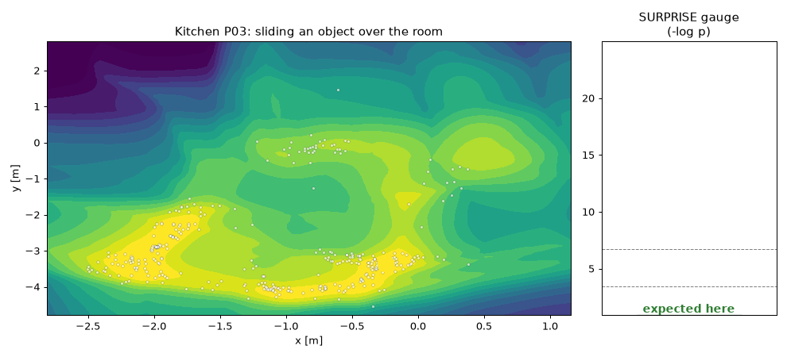
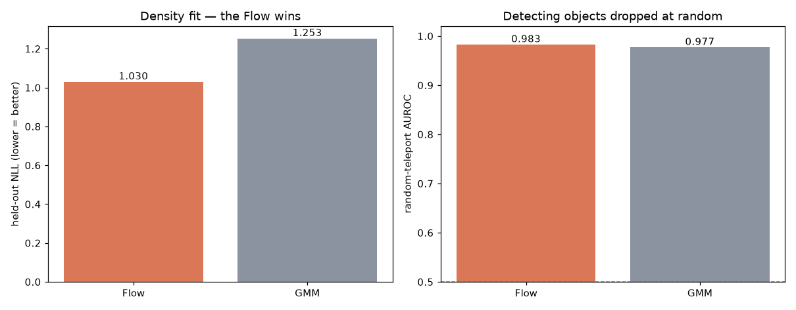
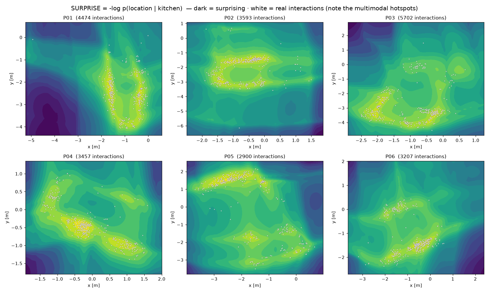
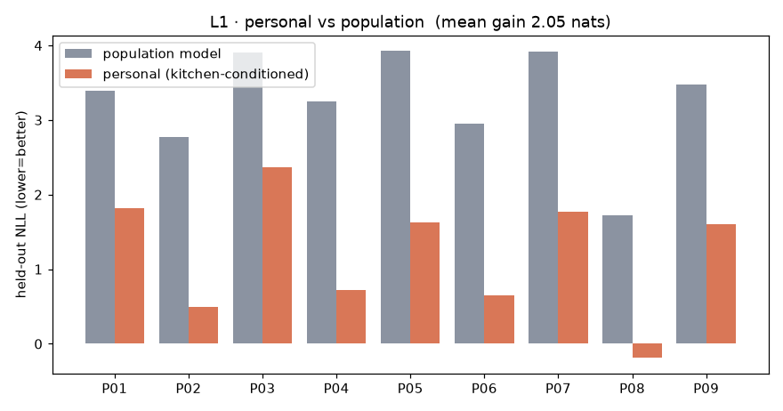
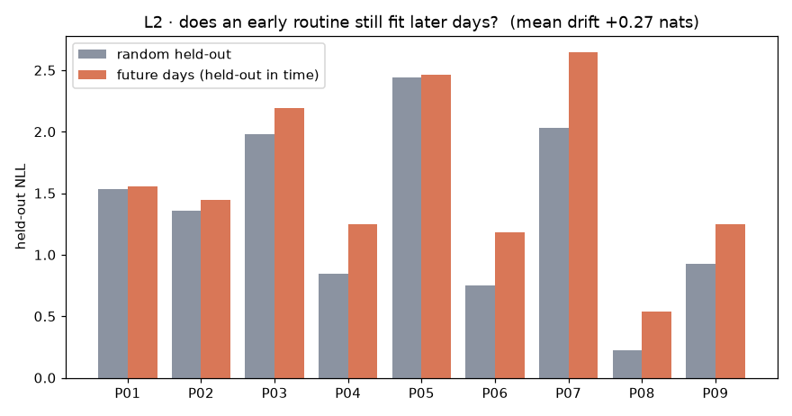
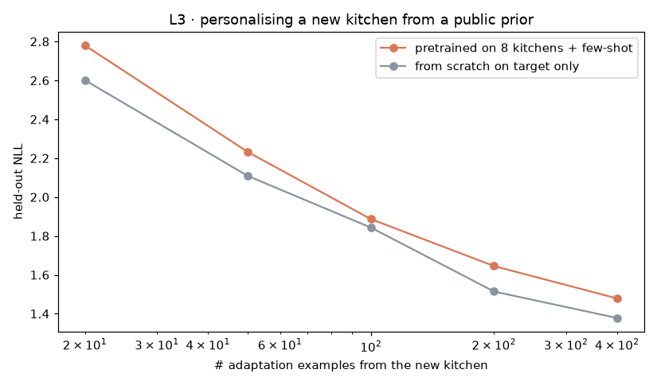
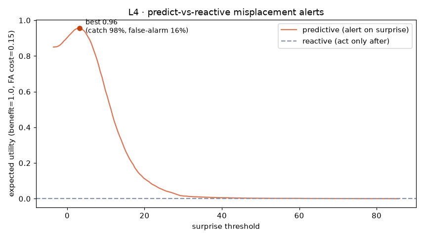
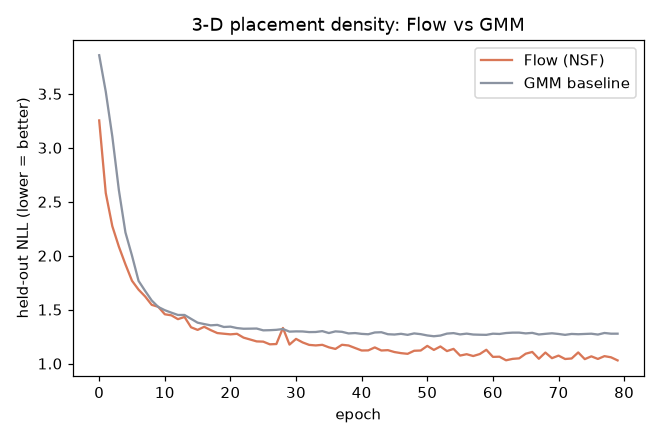

実験B（−log p(位置｜厨房)）を、異常検知から個人の routine とその介入有用性まで深化（L1–L4）。
要旨：実厨房の配置は多峰なので Flow が GMM に勝つ（B）。そこから、 L1 習慣は個人的（“誰か”を知ると予測が改善）、L2 習慣は時間で動く/定着する、 L3 公共の事前分布から少数例で新しい人を個人化できる、L4 サプライズで事前警告する方が事後対応より得、 を示す。各図に観察と解釈（だから何が言えるか）を併記。

観察：物を厨房の各位置に置いたときの −log p を色で、白点＝実際の操作位置。プローブが普段の作業島（明）から外れると計器が跳ねる。
**だから何が言えるか**：実厨房でも『普段の置き場』は複数の島＝多峰で存在し、そこを外れた瞬間だけ驚く。＝サプライズは“場所の妥当性”を連続量として測れており、単なる外れ値フラグでなく『どれくらい変か』の勾配を持つ。

観察：held-out NLL は Flow 1.030 < GMM 1.253（差 0.22 nats）。ランダム配置の検出AUROCは両者とも ~0.9825。
**だから何が言えるか**：厨房配置は多峰なので、単一ガウスの重ね合わせ（GMM）より Flow の方が 0.22 nats ぶん“ありえる場所”を正しく狭く当てている。＝『実験Aでガウスに並ばれた』のは題材が単峰で低次元だったからで、実データの多峰性ではNFの表現力が本質的に効く、という反省の実証。一方ランダム配置は簡単すぎて両者高く、差は密度(NLL)側にしか出ない＝評価は“難しい異常”で見るべき。

観察：6厨房それぞれ、明るい山（低サプライズ＝定位置）が複数。白点の実操作もその島に乗る。
**だから何が言えるか**：人は物を1箇所でなく数箇所の“定位置”に置く。この多峰構造こそFlowがGMMに勝つ理由で、『どこがその人にとって普通か』は本質的に多峰＝個人ごとに違う地図になる、という次(L1)への布石。

観察：厨房（＝人）で条件づけたモデルは、集団一律モデルより held-out NLL が平均 2.05 nats 低い。
**だから何が言えるか**：＋なら“誰か”を知るだけで予測が 2.05 nats 改善＝**置き場の習慣は個人ごとに違う**。つまり集団基準の忘れ物検出は、その人には普通の場所を『異常』と誤警報する。個人化は任意でなく必須、という結論。

観察：早期データで学んだモデルを『後日（未来）』で評価すると NLL が時間無関係のランダム保留より平均 +0.27 nats 変化。
**だから何が言えるか**：未来ほど当てにくい＝“普通”は時間で動く（非定常）。＝静的な忘れ物検出は時間とともに陳腐化し、オンライン更新が要る。習慣が再編される＝これ自体が“忘却/学習”の時間的側面。

観察：対象厨房に k 例だけで適応。少数(20例)では pretrained 2.78 / scratch 2.60、多め(400例)でも 1.48 / 1.38。
**だから何が言えるか（正直な逆結果）**：他人で事前学習した方が全域で**むしろ悪い**（20例で +0.18 nats）。L1 が示した通り配置習慣は**強く個人的**で、しかも厨房ごとに座標系・レイアウトが違うため、他人の事前分布は“間違った prior”になる。＝**moat は「他人で事前学習」ではなく、本人自身の少数データからの個人化**（またはレイアウトを揃えた表現）にある、という重要な知見。naiveな転移は効かず、個人化の“正しいやり方”選択が本質。

観察：サプライズ閾値を動かした予測ポリシーの期待効用は最大 0.95（リアクティブ＝事後対応は 0）。最良点で at-risk の 98% を捕捉、誤警報 16%。
**だから何が言えるか**：効用が正＝誤警報コストを引いても“置く前に驚いて警告する”方が事後対応より得（正味 0.95）。＝サプライズは検出器の AUC でなく**意思決定に効く**信号で、最適閾値が『いつ介入すべきか』を与える。貢献は“異常検知”でなく**介入ポリシー**、というテーゼの実証。（ただし at-risk はランダムテレポート＝易しめの合成異常なので捕捉率は楽観的。要点は“予測＞リアクティブ”という意思決定の向き。）

観察：エポックごとの検証NLLで Flow が一貫して GMM より低い。
**だから何が言えるか**：表現力の差は初期の運や過学習でなく安定した性質＝多峰配置に対するNFの優位は再現的。
python -m hde.report で自動生成。NF forget/mistakeシリーズBの深化版（L1–L4）。